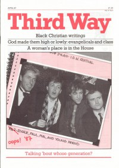

CMnexus
: Contemporary Christian culture, music, and media.
|
Paul McCartneyOn the cover
April 1987
ThirdWay | Media coverageAlbums & reviews:1989: Flowers In The Dirt 1990: Tripping The Live Fantastic 2012: Kisses on the Bottom Books about Paul McCartney
- "Playing It Safe" in Dancing With Demons: The Music's Real Master (Jeff Godwin, 1988).
|
|